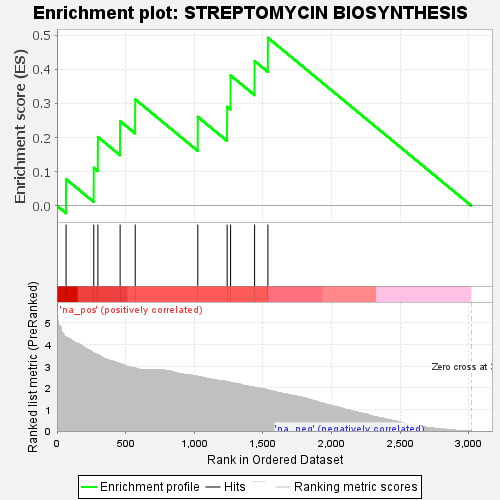
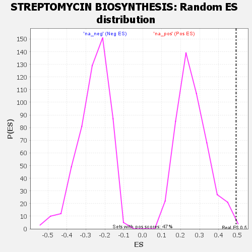

| | | Dataset | GSEA RNK clr Maaslin2 MucosalvsLuminal KO - Cecum.rnk |
| Phenotype | NoPhenotypeAvailable |
| Upregulated in class | na_pos |
| GeneSet | STREPTOMYCIN BIOSYNTHESIS |
| Enrichment Score (ES) | 0.49235883 |
| Normalized Enrichment Score (NES) | 1.8743691 |
| Nominal p-value | 0.0042283298 |
| FDR q-value | 0.045532193 |
| FWER p-Value | 0.408 |
Table: GSEA Results Summary

Fig 1: Enrichment plot: STREPTOMYCIN BIOSYNTHESIS
Profile of the Running ES Score & Positions of GeneSet Members on the Rank Ordered List

Fig 2: STREPTOMYCIN BIOSYNTHESIS: Random ES distribution
Gene set null distribution of ES for STREPTOMYCIN BIOSYNTHESIS